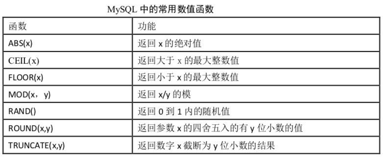
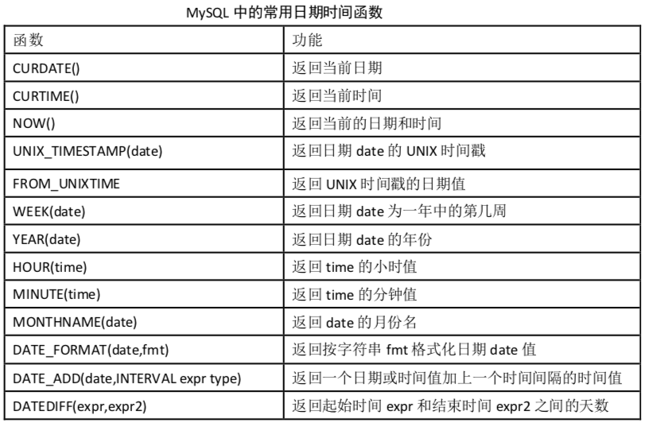
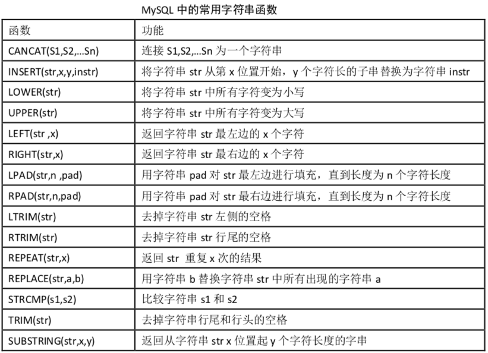
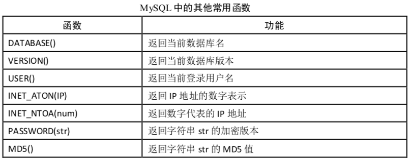

函数
MySQL中的函数主要分为当行函数和聚合(分组)函数两种。
单行函数
- 数值计算类函数

日期计算类函数

字符串类函数

其他函数

聚合函数
聚合函数也被称为分组函数，它的作用是将多个数据进行计算，得到一个结果。例如，将多个数字相加，求多个数字里的最大（最小）值或平均值，将多个字符串拼接成为一个字符串等。group by语句通常都需要配合聚合函数来使用。
| Name | Description |
|---|---|
| AVG() | 返回参数的平均值 |
| BIT_AND() | 按位返回AND |
| BIT_OR() | 按位返回OR |
| BIT_XOR() | 按位返回异或 |
| COUNT() | 返回返回的行数 |
| COUNT(DISTINCT) | 返回许多不同值的计数 |
| GROUP_CONCAT() | 返回连接的字符串 |
| JSON_ARRAYAGG() | 将结果集作为单个JSON数组返回 |
| JSON_OBJECTAGG() | 将结果集作为单个JSON对象返回 |
| MAX() | 返回最大值 |
| MIN() | 返回最小值 |
| STD() | 返回样本的标准差 |
| STDDEV() | 返回样本的标准差 |
| STDDEV_POP() | 返回样本的标准差 |
| STDDEV_SAMP() | 返回样本标准差 |
| SUM() | 归还总和 |
| VAR_POP() | 返回样本的标准差异 |
| VAR_SAMP() | 返回样本方差 |
| VARIANCE() | 返回样本的标准差异 |
流程控制语句
和Java语言一样，sQL语言里也有类似的流程控制语句。
| 语句 | 用法 |
|---|---|
| IF(value,t ,f) | 如果value是真，返回t，否则返回f |
| IFNULL(value1, value2) | 如果value1不为空，返回value1，否则返回value2 |
| CASE WHEN 条件1 THEN result1 WHEN 条件2 THEN result2 .... [ELSE resultn] END | 相当于Java的if...else if...else... |
| CASE expr WHEN 常量值1 THEN 值1 WHEN 常量值1 THEN 值1 .... [ELSE 值n] END | 相当于Java的switch...case... |
示例：
select if(3>2,"hello","good");
/*输出
+------------------------+
| if(3>2,"hello","good") |
+------------------------+
| hello |
+------------------------+
*/
select if(english>60,"及格","不及格") as english_level,score.* from score where id=1;
/*输出
+---------------+----+------+---------+
| english_level | id | math | english |
+---------------+----+------+---------+
| 及格 | 1 | 49 | 71 |
+---------------+----+------+---------+
*/
select ifnull(1,"good");
/*输出
+------------------+
| ifnull(1,"good") |
+------------------+
| 1 |
+------------------+
*/
select english, -- 注意：这里的,一定不能漏
case when english < 60 then "不及格"
when english>=60 and english < 80 then "及格"
when english>= 80 then "优秀"
else "错误"
end as "english_level"
from score where id < 4;
/*输出
+---------+---------------+
| english | english_level |
+---------+---------------+
| 71 | 及格 |
| 66.7 | 及格 |
| 86 | 优秀 |
+---------+---------------+
*/
select id,name,gender,
case gender
when "男" then "male"
when "女" then "female"
else "other"
end as "english_gender"
from student where id < 5;
/*输出
+----+--------+--------+----------------+
| id | name | gender | english_gender |
+----+--------+--------+----------------+
| 1 | 郭德纲 | 男 | male |
| 2 | 陈乔恩 | 女 | female |
| 3 | 赵丽颖 | 女 | female |
| 4 | 王宝强 | 男 | male |
+----+--------+--------+----------------+
*/